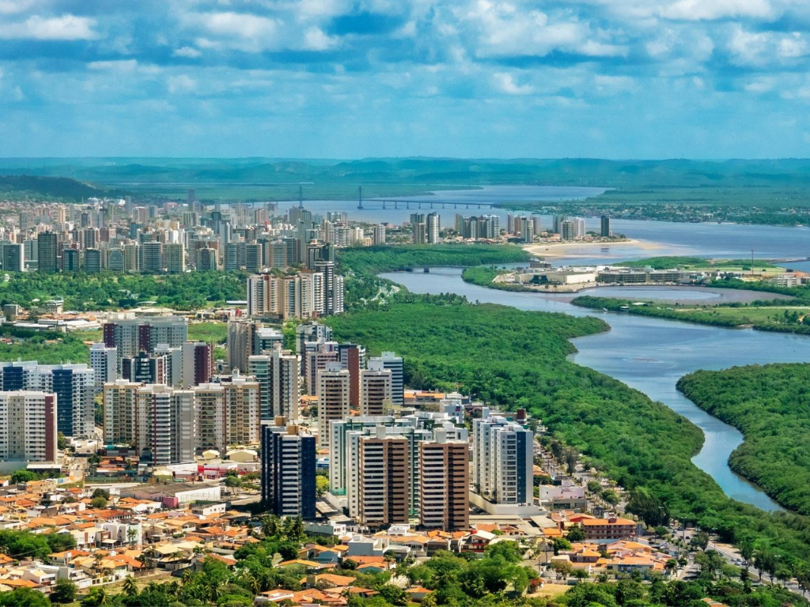

Sergipe é o menor estado do Brasil em extensão territorial e está localizado na região Nordeste do país. Sua capital, Aracaju, é conhecida por sua qualidade de vida, praias urbanas e organização. A economia sergipana é baseada no comércio, turismo, agricultura, pecuária e na exploração de petróleo e gás natural. O estado também possui rica cultura popular, marcada pelas festas juninas, pelo artesanato e pelas tradições nordestinas. Além disso, Sergipe abriga belas paisagens naturais, como os cânions do rio São Francisco, manguezais e praias tranquilas que atraem turistas de diversas regiões do Brasil.
